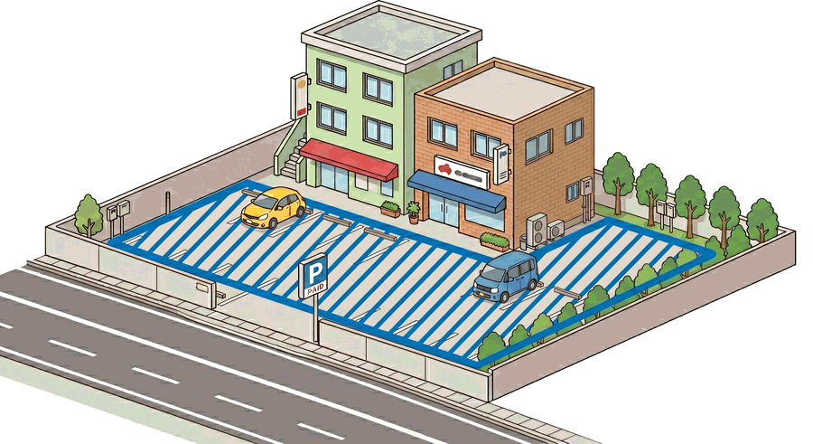
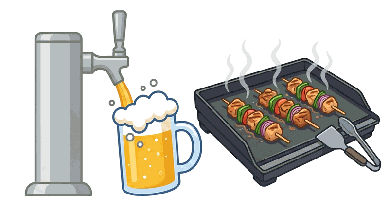
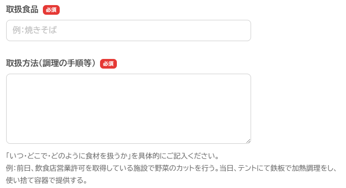

申請前チェックリスト
八王子まつりの臨時出店は民地（私有地）のみの取り扱いです。また、調理行為を行う場合は、保健所への臨時出店届の提出が必要です。下記すべてに当てはまることをご確認のうえ、お申し込みください。
※
申込は出店希望の受付です。審査結果により出店できない場合があります。
※ 判断に迷う場合は、下部の「お問い合わせ」先までご連絡ください。
-
出店に使える民地（私有地）を確保している
道路使用許可は取得できません。甲州街道沿いの民地での出店も不可です。机やテントが公道上に出ないように設営してください。
⭕ 出店できます

建物前に民地（私有地）があり、机・テントが道路上にはみ出ない場合
❌ 出店できません

民地がなく、机・テントが公道にはみ出てしまう場合（甲州街道沿いも不可）
- （他者所有地の場合）管理者と書面で利用許可を取り交わしている。 ビル・マンション・駐車場・公開空地など。消防法に抵触しない場合に限ります。 📄利用許可書テンプレート（PDF）
-
（調理行為をする場合）保健所の臨時出店に関する注意事項の内容を確認している
これらの調理行為を行う場合は、保健所への臨時出店届の提出が必要です。申請フォーム内で必要事項を入力いただきます。

・ビールサーバー等から注ぐ
・鉄板での加熱調理
・盛りつけ
📄保健所への申請に係る事前確認資料（必ずお読みください） -
（見本陳列のテイクアウト販売をする場合）申請・食品表示に対応できる
 通常の飲食店営業の範囲内のため届出は不要です。
通常の飲食店営業の範囲内のため届出は不要です。
但し、店先に見本を陳列してテイクアウト販売をする場合は、臨時出店申請・食品表示が必須です。 - 八王子商工会議所の会員事業所である（または入会手続きに同意できる） 非会員の方は、出店の申請が許可された後にご入会のお手続きをお願いします。